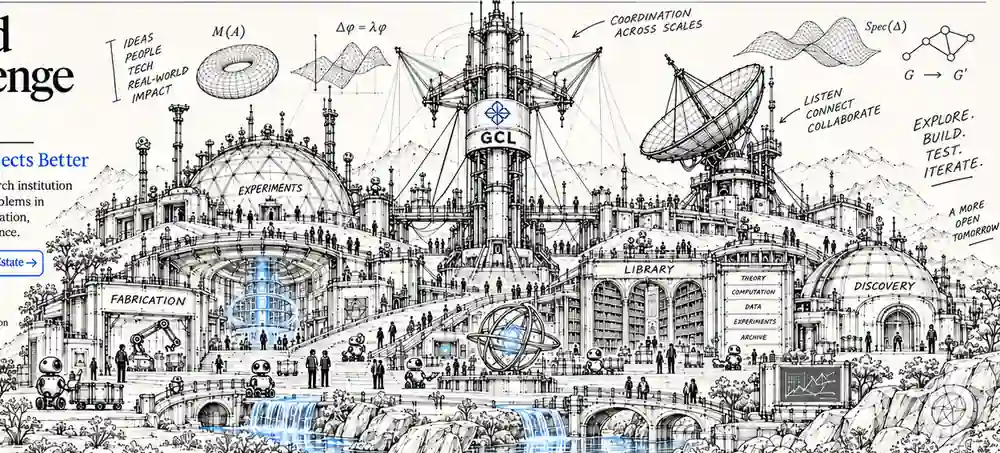
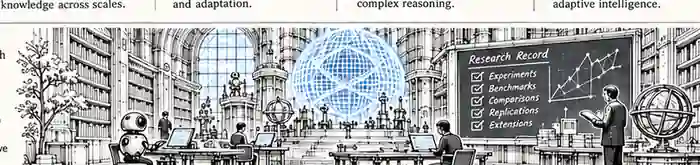

Grand
Challenge
Labs
Humanity Expects Better
An independent research institution exploring difficult problems in mathematics, computation, and adaptive intelligence.
Explore the Research EstateThe working
mathematical estate.
A research environment for deep mathematics, rigorous computation, and adaptive intelligence — uniting theory, experiment, and real-world exploration across scales.
Mathematics
Programme
Foundations, structure, and mathematical tools for complex systems and intelligence.
AETHER
Coordination for a wider intelligence — integrating models, data, and knowledge.
MODULUS
Geometry that moves with the problem — flexible structures for computation and learning.
SPINDLE
Computation as controlled transport — structures, flows, and transformations.
Adaptive
Intelligence Atlas
A growing, open record of models, methods, and evidence in adaptive intelligence.
Discovery with
a visible record.
Research at GCL is developed in the open, with methods, data, and results documented for inspection, replication, and extension.

Investigate the difficult questions.
A hypothesis is not a certificate.
Our public research records distinguish proposed approaches, experiments, reviews, and independently certified mathematical results. Follow the evidence in the original programme documentation.
Understand research status